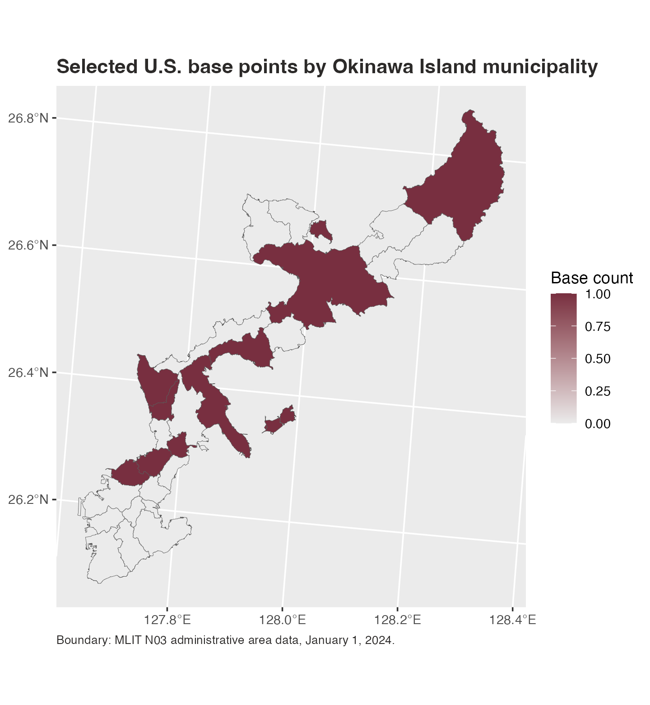

Plot Municipal Choropleth Maps
Source:vignettes/municipal-choropleths.Rmd
municipal-choropleths.RmdThe package includes official MLIT N03 municipal boundaries for
Okinawa Prefecture as of January 1, 2024. This example counts selected
U.S. base point locations by municipality and maps one fill variable:
base_count. The figure focuses on Okinawa Island so the
municipal boundaries and base locations are legible; the bundled
boundary file still contains the rest of Okinawa Prefecture.
library(ggplot2)
library(jpmap)
data("jp_us_military_bases")
okinawa_bases <- jp_us_military_bases[
jp_us_military_bases$prefecture == "Okinawa" &
jp_us_military_bases$base != "Okinawa U.S. military facilities",
]
okinawa_main_island <- c(
"那覇市", "宜野湾市", "浦添市", "名護市", "糸満市", "沖縄市",
"豊見城市", "うるま市", "南城市", "国頭村", "大宜味村", "東村",
"今帰仁村", "本部町", "恩納村", "宜野座村", "金武町", "読谷村",
"嘉手納町", "北谷町", "北中城村", "中城村", "西原町", "与那原町",
"南風原町", "八重瀬町"
)
okinawa_main_island_min_area <- 5e6
okinawa_file <- available_jpmap_data()
okinawa_file <- okinawa_file$path[
okinawa_file$year == 2024 & okinawa_file$pref_code == "47"
]
okinawa_wgs84 <- sf::st_read(okinawa_file, layer = "municipalities", quiet = TRUE)
okinawa_wgs84 <- okinawa_wgs84[
okinawa_wgs84$municipality_ja %in% okinawa_main_island,
]
okinawa_wgs84 <- okinawa_wgs84[
as.numeric(sf::st_area(okinawa_wgs84)) >= okinawa_main_island_min_area,
]
base_points <- sf::st_as_sf(
okinawa_bases,
coords = c("lon", "lat"),
crs = 4326,
remove = FALSE
)
base_municipalities <- sf::st_join(
base_points,
okinawa_wgs84["municipality_code"],
left = FALSE
)
base_municipalities <- sf::st_drop_geometry(base_municipalities)
base_counts <- aggregate(
list(base_count = base_municipalities$base),
base_municipalities["municipality_code"],
length
)
okinawa_main_map <- jp_map("municipality", include = "Okinawa", inset = FALSE)
okinawa_main_map <- okinawa_main_map[
okinawa_main_map$municipality_ja %in% okinawa_main_island,
]
okinawa_main_map <- okinawa_main_map[
as.numeric(sf::st_area(okinawa_main_map)) >= okinawa_main_island_min_area,
]
okinawa_main_map <- jp_map_with_data(
okinawa_main_map,
base_counts,
values = "base_count"
)
#> Warning: 17 map region key(s) in `municipality_code` did not receive data
okinawa_main_map$base_count[is.na(okinawa_main_map$base_count)] <- 0L
ggplot(okinawa_main_map) +
geom_sf(
aes(fill = base_count),
color = "grey35",
linewidth = 0.12
) +
coord_sf(
crs = jpmap_crs(),
datum = sf::st_crs(4326)
) +
scale_fill_gradient(
low = "grey92",
high = "#782F40",
name = "Base count"
) +
labs(
title = "Selected U.S. base points by Okinawa Island municipality",
caption = "Boundary: MLIT N03 administrative area data, January 1, 2024."
) +
theme_gray() +
theme(
axis.title = element_blank(),
panel.grid.minor = element_blank(),
legend.background = element_rect(fill = "white", color = NA),
plot.title = element_text(face = "bold", color = "#2C2A29"),
plot.caption = element_text(color = "#2C2A29", hjust = 0, size = 8)
)
For other prefectures, first build the prefecture’s municipal
boundaries with
jpmap_build_data(year = 2024, prefecture = "..."), then use
the same join pattern.